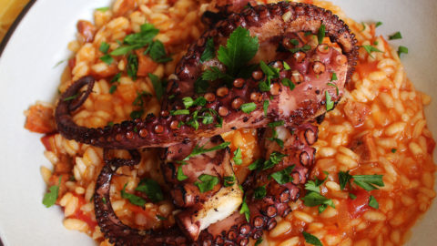

Arroz de Polvo à Moda de Vila do Conde
Ingredients
- 2 cups Arborio or short-grain rice
- 1 medium-sized octopus (about 2 pounds), cleaned and cut into pieces
- 1 onion, finely chopped
- 2 cloves garlic, minced
- 1/2 cup tomato sauce
- 1/2 cup white wine
- 1/4 cup olive oil
- 1 teaspoon sweet paprika
- 1 bay leaf
- 1/2 teaspoon saffron threads (optional)
- Salt and black pepper to taste
- 4 cups fish or vegetable broth, hot
- Fresh parsley for garnish
- Lemon wedges for serving

Preparation
-
Clean and Prepare Octopus:
Clean the octopus, removing the beak and eyes. Cut it into bite-sized pieces.
-
Sauté Aromatics:
In a large, heavy-bottomed pan, heat olive oil over medium heat. Add chopped onions and garlic, sautéing until softened.
-
Add Octopus and Spices:
Add the octopus pieces to the pan. Season with sweet paprika, saffron (if using), salt, and black pepper. Stir well to coat the octopus in the spices.
-
Deglaze with Wine:
Pour in the white wine to deglaze the pan, scraping up any browned bits from the bottom.
-
Add Rice and Tomato Sauce:
Stir in the Arborio or short-grain rice, ensuring it is well-coated in the flavors. Add the tomato sauce and continue stirring.
-
Pour in Broth:
Add hot fish or vegetable broth to the pan. Place the bay leaf in the mixture. Stir well and bring it to a simmer.
-
Simmer Until Cooked:
Reduce the heat to low, cover the pan, and let it simmer until the rice is cooked and the octopus is tender. This usually takes about 18-20 minutes.
-
Garnish and Serve:
Once cooked, remove the bay leaf. Garnish the Arroz de Polvo with fresh parsley. Serve hot with lemon wedges on the side.